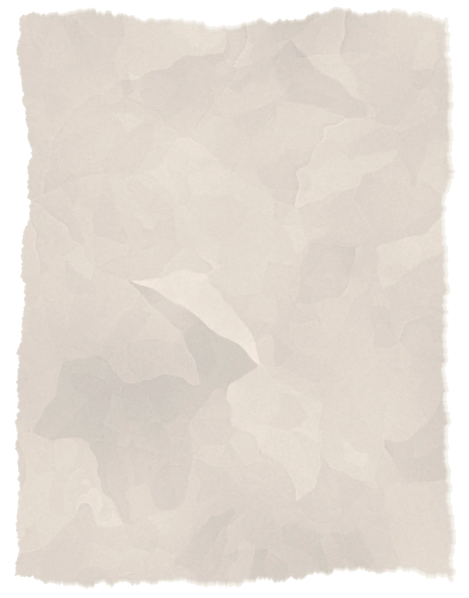

2026
td synnex microsoft agent
an azure support assistant that answers from trusted microsoft docs and escalates when the evidence falls short
read more →hi, i’m srishti. i study computer information systems at clemson, with minors in math and artificial intelligence. i like building things that help people make sense of information they don’t have time to sift through themselves.
in clemson’s watt ai program, that means working with hospital reports to find recurring patterns and trace them back to the records behind them. in my td synnex capstone, it means building a support assistant that can explain where its answers come from and recognize when it needs to bring in a human.
both projects keep bringing me back to the same question: how do we build ai that people have good reason to trust?
outside of those projects, i lead clemson’s girls who code chapter, a community of 100+ members. i want to help make computing feel like a place more people belong.
next up: ai research and innovation intern at bmw manufacturing

an azure support assistant that answers from trusted microsoft docs and escalates when the evidence falls short
read more →
a multi-agent platform that researches companies and markets, then checks its own conclusions
read more →
a retrieval system that cites the exact records behind each answer, and the evaluation that checks it
read more →
a read-only ai assistant that answers plain-english questions about a building’s av network
read more →